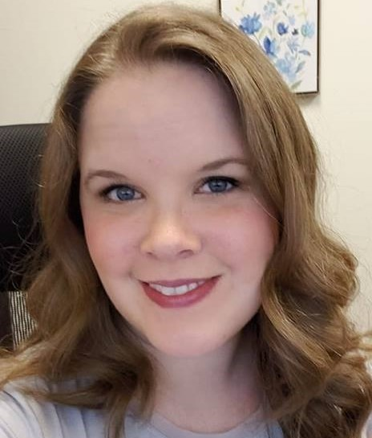

About Me

Hello All! My name is Becca and I am excited to get to know you all. I got my start at the Art Institute of Atlanta studying to be an illustrator, but discovered quickly that I did not have the necessary passion for that field. I completely switched directions after a year and went on to get my Bachelor's degree in Psychology from the University of Georgia.
Once in the professional world, I discovered you cannot do a whole lot with just a Bachelor's in Psychology and I found myself in the mortgage world doing cold calling. Needless to say, this was not super exciting and I was incredibly jealous of my husband's job in sales. I decided to try my hand at that and discovered I was strangely good at selling mattresses. I was even good at management! Sadly, an injury made it impossible for me to continue carrying queen size beds and heavy frames around so I found myself back in the mortgage world for a few years.
Fast forward to today and you find me with an incredible baby boy who is my whole world and my amazing husband. We love to spend time making new memories and giving our son new experiences. We enjoy travelling, trying new foods, and watching movies.